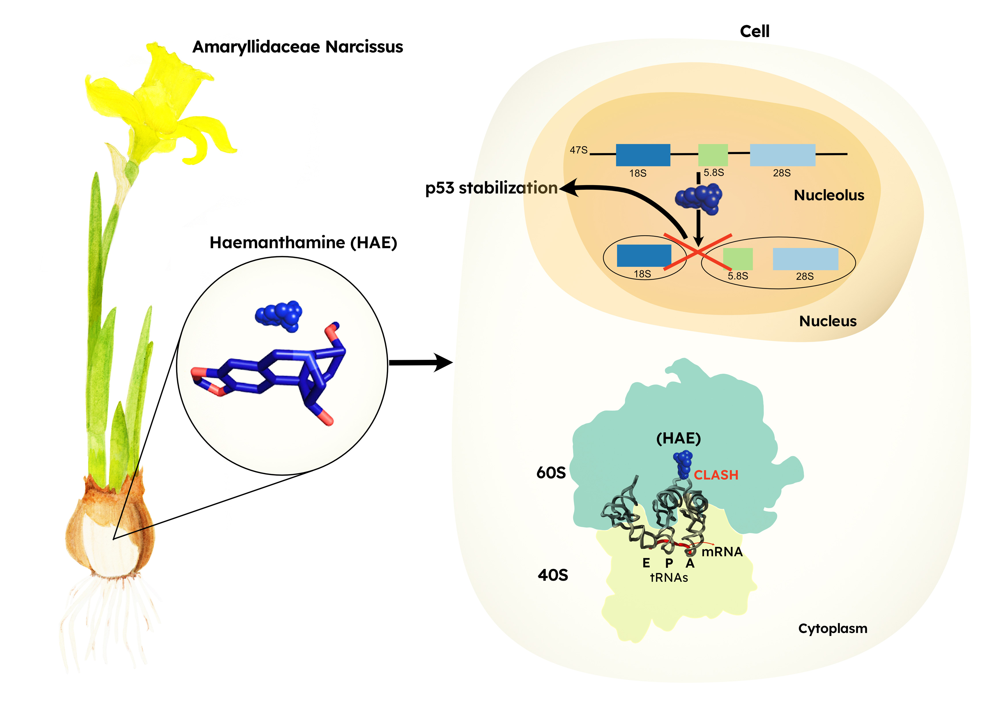

Motivation
This project involved recreating an already published graphical abstract. The client needed to improve the layout and colours for a presentation. The main goal was to make the image more accessible and self-explanatory for scientific communication. Graphical abstracts usually consist of a single image, which depicts the main findings of the article. Well-designed graphical abstracts can be used for science communication and social media advertisement, presentations and also for outreach projects. They should be considered an important part of scientific research.
Analysis of the original graphical abstract
We analysed the original graphical abstract to find which points needed improvements.
 We initially suggested to remove the picture of the daffodil in a pot, on the top left corner of the image.
The naturally produced molecule discussed in the paper, haemanthamine, is a potential anti-cancer and is extracted from the bulb of the daffodils.
Such information was missing from the original graphical abstract, therefore impairing understanding of how the researchers obtained haemanthamine.
We suggested substituting the picture with a botanical illustration of the daffodil, while we kept the original representation of the molecule.
Another point that we sought to improve was the drawing of the cell containing the ribosome.
We advised changing the schematic of the cell by using different shapes.
The last point we recommended was to rework the schematic view of the ribosome by using an image that was giving the reader a more accurate perception.
We initially suggested to remove the picture of the daffodil in a pot, on the top left corner of the image.
The naturally produced molecule discussed in the paper, haemanthamine, is a potential anti-cancer and is extracted from the bulb of the daffodils.
Such information was missing from the original graphical abstract, therefore impairing understanding of how the researchers obtained haemanthamine.
We suggested substituting the picture with a botanical illustration of the daffodil, while we kept the original representation of the molecule.
Another point that we sought to improve was the drawing of the cell containing the ribosome.
We advised changing the schematic of the cell by using different shapes.
The last point we recommended was to rework the schematic view of the ribosome by using an image that was giving the reader a more accurate perception.
Sketch for the new graphical abstract
We presented several sketches until the client was fully satisfied. In the sketch, the direction of reading is from left to right and not as in the original from top to bottom. A spotlight was added to the bulb as a magnifying glass with the molecule to give a better idea of how the molecule was extracted. On the right of the sketch, we suggest a different shape for the cell and a representation of the ribosome based on the true three-dimensional structure.
New colour palette
The clients asked also for a new colour palette. We suggested some palettes and the one chosen by the client is in the image on the left. The colour palette suggested is colour-blind-friendly. The image shows a test against different types of colourblindness: deuteranopia, protanopia and tritanopia. Having a colour-blind-friendly palette has several advantages, such as that is accessible also to people with visual impairments.
New graphical abstract
